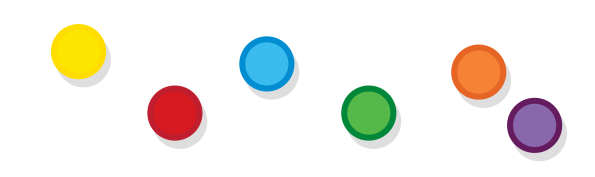
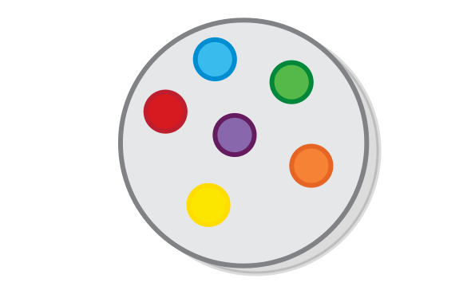
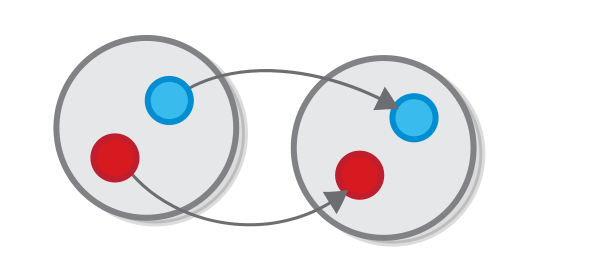
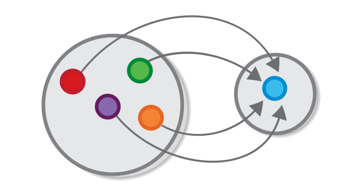
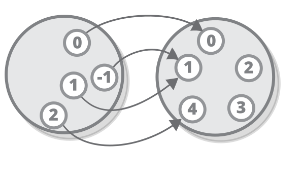
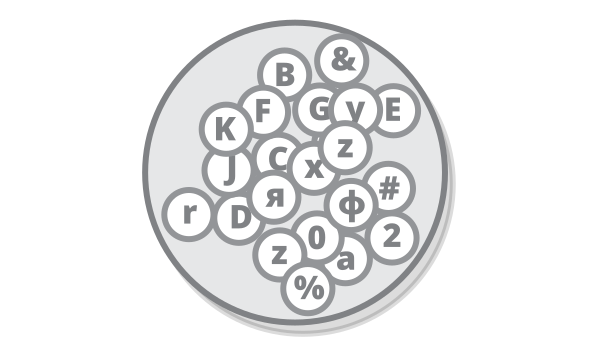
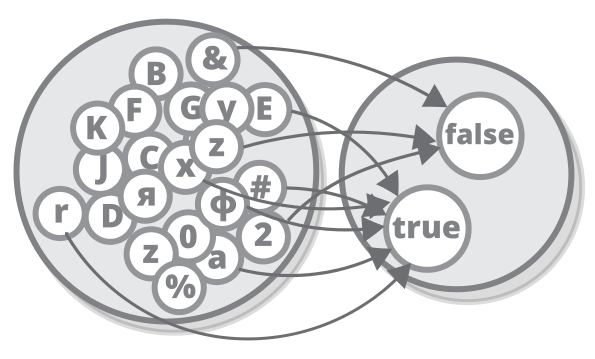
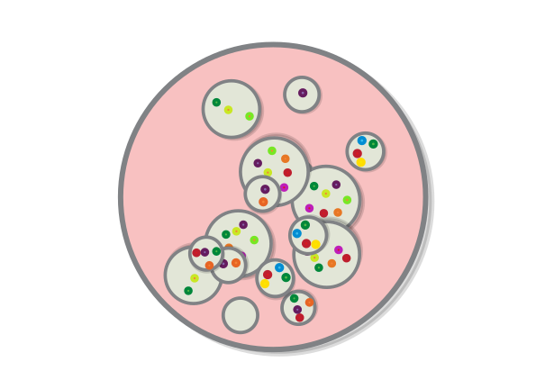
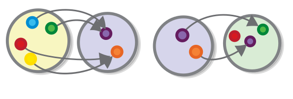
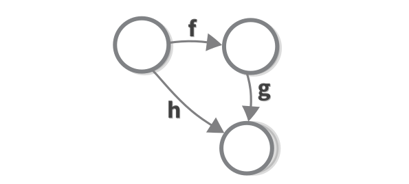

We will begin our inquiry by looking at the basic theory of sets. You will understand why shortly. For now, it suffices to say that sets are an example of a category.
Instead of asking what can be defined and deduced from what is assumed to begin with, we ask instead what more general ideas and principles can be found, in terms of which what was our starting-point can be defined or deduced. Bertrand Russell, from Introduction to Mathematical Philosophy
Most scientific and mathematical theories have a specific domain, to which they are related, and in which they are valid. They are created with this domain in mind and are not intended to be used outside of it. For example, Darwin’s theory of evolution is created so it explains how different biological species came to be. And quantum mechanics is a description of what particles are at the low scale. Even the work of most mathematicians, although it is not bound to a specific domain, is strongly related to it, as differential equations are linked to the description of events that change over time.
Set theory and category theory are different. They are not created for to provide a rigorous explanation of how a particular phenonium works, but to try to provide a more general framework for explaining all kinds of phenomena. Theories that are like that are called abstract theories. All theories use abstraction, else they would be pretty useless (without it Darwin would have to speak about specific animal species or even individual animals) but few are inherently abstract, so some of their core concepts are left unspecified. Or in other words, all theories are applicable outside of their domains, but set theory and category theory do not have a domain, to begin with.
People have tried to be precise and at the same time down to Earth for centuries, and only recently discovered that “precise and down to Earth” is an oxymoron. Let’s take Euclidian geometry as an example. Yes, Euclidian geometry is precise, because it is valid for all sets of objects, called (“point” “line” “angle” and “circle” etc.), which have relationships, as defined by the five famous axioms. Yes, geometry does, in many instances, describe the natural world, because there are many sets of objects which have these relations. However, its “precise” part and it’s “down to Earth” part have nothing to do with each other. We can, for example, define a point as any stain on the floor of your room and that a line as a piece of duct tape, put on the same floor - that will be a completely valid application of the Euclidian laws, albeit not very useful one. Or we can try to use geometry to reason about points on the surface of the Earth, which is a very useful application, of geometry, however not of Euclidian geometry, because Euclidian geometry only describes points on a flat plane, and the Earth is not flat. You can argue that these are actually two separate theories there, which just happen to be perceived as one. You have the axioms, or the postulates on one hand, which are not useful for anything on their own, and you have applications in science and engineering which are somewhat based on them, but not quite.
Everything in set theory is defined in terms of sets. A set is a collection of things where the “things” can be anything you want. Consider, for example, these balls:

For example, let’s construct a set, call it G (as grey), consisting of all of them. This is how we can mark it:

The example may look childish but in fact, this set is just as valid as any other set.
The things that are contained in the set are called its elements. A set is like a summary of its elements. It has no other structure, for example, there is not order, no ball goes before or after another, there are no members which are “special” with respect to their membership in the set. Two sets that contain the same elements are also the same.
The key insight about what a set it is that it enables you to reason about several things as if they were one.
Let’s construct one more set. The set of all balls that are warm colour. I will call it Y, because in the diagram is coloured in yellow.

Notice that Y contains just elements that are also present in G. That is, every element of the set of Y is also an element in the set G. When two sets have this relation, we may say that Y is a subset of G (or Y ⊆ G).

The set of all red balls contains just one ball.

Like we said above, sets are all about for summarising several elements into one. Still, sets that contain just one element are perfectly valid. Simply, there are things which are one of a kind. Furthermore, if I have a function which expects a set of given items, here shouldn’t be any issue if the “items” are just one item. Or to take a real-life example, the set of queens of England is a singleton set. The set of books written by the American writer Harper Lee and published during her lifetime is a singleton set - she has published just one novel.
Of course if one is a valid answer, so can be zero. If we want a set of all black balls B or all the white balls, W, the answer to all these questions is the same - the empty set. Or in other words.

Note that a set is defined only by the items it contains, which means that there is no difference between the set that contains zero balls and the set that contains zero numbers, for instance. In other words, the empty set is unique set, which makes it a very special one. Formally, the empty set is marked with the symbol ∅ (so B = W = ∅).
| The empty set is a special one, for example, it is a subset of every other set (mathematically speaking, **∀ A | A ⊆ ∅**) |
We will encounter the empty set again.
A function is a relationship between two sets which matches each element of one set, called the domain of the function, with exactly one element from another set, called the converse domain, or the codomain of the function.
By function I mean the unity of the act of arranging various representations under one common representation. Immanuel Kant, from Critique of Pure Reason
Here is a function, f which maps each ball from the set R to the ball with the opposite colour in another set G ( in mathematics a function’s name is often accompanied by the names of its domain and codomain, like this: f: R → G)

This is probably one of the simpler types of functions there exists. That is because it encodes a one-to-one relationship between the sets - one element from the domain is connected to exactly one element from the codomain (and the other way around).
But functions can also express relationships of the type many-to-one, where many elements from the domain might be connected to one element from the codomain (but not the other way around).
For example, a function can express a relationship in which several elements from the domain relate to the same element of the codomain.

It can also express relationships in which some elements from the codomain do not play a part.

One thing that you cannot have is a domain element which is not mapped to anything, or which is mapped to more than one codomain element. That would mean the relationship expressed by the function will be many-to-many, and, as we said in the beginning, functions only model many-to-one relationships. There is a reason for that “design decision”, and we will arrive at it shortly.
Sets and functions can express relationships between all kinds of objects, and even people. Every question that you ask can most probably be expressed as a function.
The question “How far are we from New York?” is a function with a domain the set of places in the world and a codomain, consisting of the set of all positive numbers
Question: Some people might say that the codomain of this function is bigger than it should be. How would you refine it?
The question “Who is my father?” is a function whose domain is the set of all people in the world. Question: What is the codomain of this function?
Note that the question “Who is my child?” is NOT a straightforward function, because a person can have no children, or can have multiple children. We will learn to represent such questions as functions later.
Question: Do all functions that we drew at the beginning express something? Do you think that a function should express something in order to be valid?
For every set G, no matter what it represents, we can define the function that does nothing, or in other words, a function which maps every element G to itself. It is called the the identity function of G or idG: G → G.

You can think of idG as a function which represents the set G in the realm of functions. Its existence allows us to prove many theorems, that we “know” by intuition, formally.
For each set and subset, no matter what they represent, we can define the function that maps each element of the subset to itself:
Every set is a subset of itself, in which case this function is the same as the identity.
There is a unique function from the empty set to any other set.

Question: Is this really valid? Why? Check the definition.
Note that this statement is also a result from the one saying that there is a function between a Subset and a Set, and the one that says that the empty set is a subset of any other set.
Question: What about the other way around. Are there functions with the empty set as a codomain as opposed to a domain?
There is a unique function from any set to any singleton set.

Question: Is this really the only way to connect any set to a singleton set in a valid way?
Question: Again, what about the other way around?
Many things can be expressed as sets and functions, let’s examine some of them.
All mathematical operations can be expressed as functions, acting on the set of numbers. Actually there are several such sets, such the set of positive whole numbers, (also called “natural” numbers), N := {1, 2, 3… ∞}, the set of both positive and negative whole numbers Z := {-∞… -3 -2, -1, 0, 1, 2, 3… ∞}. And the set of “Real” numbers which include all numbers that I know of.
For example, squaring a number is a function from the set of real numbers to the set of real positive numbers (because both sets are infinite, we cannot draw them in their entirety, however we can draw a part of them).

I will use the occasion to reiterate some of the more important characteristics of functions:
All numbers from the codomain have (or should have) two arrows pointing at them (one for the positive square root and one for the negative one), and that is OK.
Overall everything is OK, as long as you can always provide exactly one result (also known as The result™) per value, and in mathematics almost always do. Actually, math is designed in a way so its operations are valid functions:
Every generalisation of number has first presented itself as needed for some simple problem: negative numbers were needed in order that subtraction might be always possible, since otherwise a − b would be meaningless if a were less than b; fractions were needed in order that division might be always possible; and complex numbers are needed in order that extraction of roots and solution of equations may be always possible. Bertrand Russell, from Introduction to Mathematical Philosophy
Note that most mathematical operations, such as addition, multiplication etc. require two numbers in order to produce a result. This does not mean that they are not functions, it means that they are just a little more fancy ones. Depending on what we need, we may present those operations as functions from the sets of tuples of numbers to the set of numbers, or we may say that they take a number and return a function. More on that later.
Sets are used extensively in programming, especially in their incarnation as types (or also classes). All sets of numbers that we discussed earlier also exist in most languages as types, and there are also some non-mathematical types that play a huge role in programming.
The simplest type, Boolean is nothing more than a set of two values - true and false:

Another very basic set in programming is the set of keyboard characters, or Char:

Characters are actually used rarely by themselves and mostly as parts of sequences.
Most of the types of programming are composite types - they are a combination of the primitive types that are listed here. Again, we will cover these later.
Question: What is the type equivalent of subsets in programming?
Question: Do you recognise some of the basic functions we defined in programming languages you know?
Some functions in programming (also called methods, subroutines, etc.) kinda resemble mathematical functions - they sometimes take one value of a given type (or in other words, an element that belongs to a given set) and always return exactly one element which belongs to another type (or set). For example here is a function which that takes an argument of type Char and returns a Boolean, depending on whether the character is a letter.

However functions in programming can also be quite different from mathematical functions - they can perform various operations that have nothing to do with returning a value, called side effects. This is because most common programming languages and paradigms which are in use today were created at times when the computer resources were much more limited than today, and programming - much more cumbersome, so people had bigger problems than the fact that their functions were not mathematically sound.
One type of functions used in programming which strongly resembles mathematical ones are those which convert a value from one type to another, for example, the function which converts a floating-point number to an Integer. That is probably the reason why most functional languages are strongly-typed.
The concepts of types and sets are related. The concept of sets is simpler - in set theory you have only one kind of object that is (you guessed it) - set and a set can contain anything, including other sets. In type theory, you have two concepts - types and values. Types are like sets, in fact every type can be represented as a set of its values, but not every set is a type. Usually, the proper way to think about type is as a collection of values that share common characteristics. The definitions tend to vary between different type theories (of which there are a lot), but mostly go along the lines of:
The first type theory was developed by Bertrand Russell in response to a paradox in the original set theory, arising due to the fact that, unlike types (which can only contain values), sets can contain other sets.
In particular, a set can contain itself.

Unlike the set above, most sets that we discussed (like the empty set and singleton sets) do not contain themselves.

In order to understand Russell’s paradox we will try to visualise the set all sets that do not contain themselves. In the original set notation we can define this set as Let R = { x => x ∉ x } (let R be such that it contains all sets x such that x is not a member of x).

If we look at the definition, we recognise that the set that we just defined - R does not contain itself and therefore it belongs there as well.

Hm, something is not quite right with this diagram as well - Because of the new adjustments that we made R contains itself. And removing it from the set would just bring us back to the previous situation. This is Russell’s paradox. There are, of couse, multiple theories that it does not apply to.
Let’s assume that we have two functions, g: Y → P and f: P → G and the codomain of the first one is the same set as the domain of the second.

If we apply the first function g to some element from set Y, we will get an element of the set P. Then, if we apply the second function f to that element, we will get an element from type G.

We can define a new function, that is the equivalent to performing the operation described above. Let us call it h: Y → G. We may say that h is the composition of g and f, or h = f ∘ g (notice that the first function is on the right, so it’s similar to b = f(g(a)).

Composition is the essence of all things categorical. The key insight is that the sum of two parts is no more complex than the parts themselves.
Question: The definition of functional composition (presented in the second paragraph) relies on the fact that functions are many-to-one relationships between sets. How could functional composition work for many-to-many relationships? Can it work at all?
In the last diagram, the equivalence between f ∘ g and the new function h is expressed by the fact that if you follow the arrow h for any element of set Y you will get to the same element of the set G as the one you will get if you follow the g and then follow f. Diagrams that express such equivalence between sequences of function application are called commutative diagrams.
If we “zoom-out” the last diagram so it does not show the individual set elements, we get a more general view of functional composition.

In fact, because this diagram commutes (that is, all arrows, starting from a given set element ultimately lead to the same corresponding element from the resulting set), enumerating the elements is redundant. Having this insight allows us to redefine functional composition in the following, more visual, way:
The composition of two functions f and g is a third function h defined in such a way that this diagram commutes.

This is called an external diagram, by the way (and the ones that we saw before are internal).
To understand how powerful composition is, consider the following: one set being connected to another means that each function from the second set can be transferred to a corresponding function from the first one.
If we have a function g: P → Y ** from set **P to set Y, then for every function f from the set Y to any other set, there is a corresponding function f ∘ g from the set P to the same set. In other words, every time you define a new function from Y to some other set, you gain one function from P to that same set for free.

For example, if we again take the relationship between a person and his father as a function, with the set of all people in the world as a domain, and the set of all people that have children as its codomain, then each person whom my father is related to is automatically my relative - my father’s father is my grandfather, my father’s wife is my mother and so on.
Let’s go back to the function that demonstrated a one-to-one relationship.
Notice that the function is invertible, that is if you flip its arrows you get another valid function:

Invertible functions are called isomorphisms. When there is an invertible function between two sets we can say that the sets are isomorphic. For example, the temperature measured in Celcius is isomorphic to the temperature, measured in Fahrenheit.
More formally, two sets R and G are isomorphic, or R ≅ G if there exist functions f: G → R and its reverse g R → G, such that f ∘ g = idR and g ∘ f = idG (notice how the identity function comes in handy).
In category theory, the concept of an isomorphism is strongly related to the concept of equality (that is why it is denoted with ≅, which is almost the same as =). This is also related to programming, where if we have a function that convert our object of type A to an object of type B and the other way around we pretty much regard A and B as two formats of the same object.
For example, we all know that everything is equal to itself. Well, if you look closely you would see that the identity function is reversible (its reverse is itself), so each set is also isomorphic to itself.
Note that an isomorphism between two sets does not imply that their elements are similar to one another, as some of the examples might suggest. It rather implies that they have similar structure, in other words, a function that involves one of the sets, can easily be converted to a function involving the other set.

For example, if you have a function “is the husband of” that goes from the set of all married men to the set of all married women, and the corresponding function, “is the wife of”, that would make the sets of married men and married woman isomorphic (ignoring some exceptions). That is not to say that you are the same person as your significant other, but rather that every statement about you, or every relation you have to some other person or object is also a relation between him/her and the same person or object, and vice versa.
Between any two singleton sets, we may define the only possible function.

The function is invertible, which means that all singleton sets are isomorphic to one another.

Following the logic from the last paragraph, each statement about something that is one of a kind can be transferred to a statement about another thing that is one of a kind.
Question: Try to come up with a good example that shows how a statement that demonstrates the isomorphism between singleton sets (I obviously couldn’t). Consider that all of people and objects are sharing one and the same universe.
Task: Think of two singleton sets, and try to pinpoint the relation that they have.